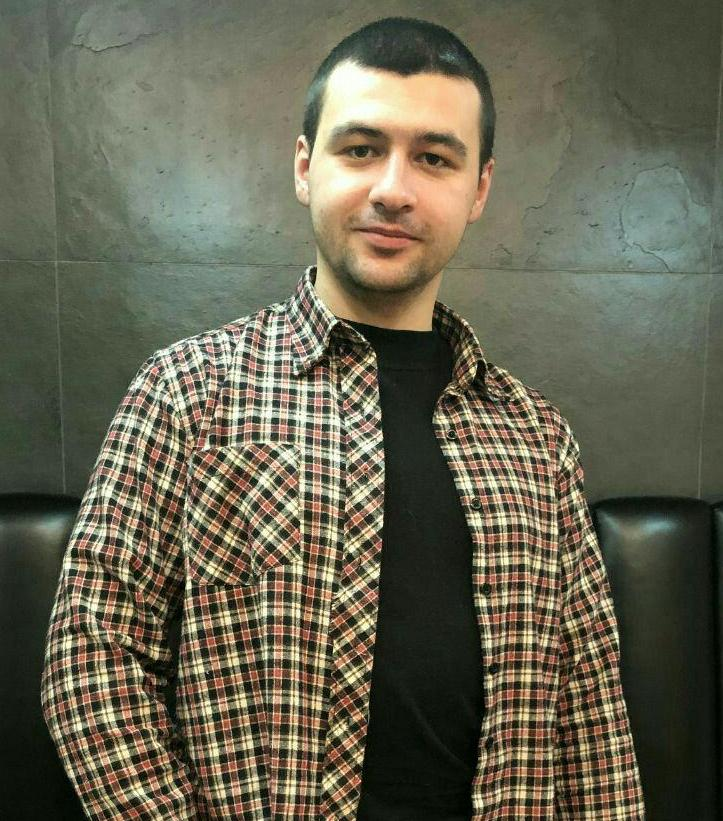

|  |
ROMAN CHORNIYCity: Ivano-Frankivsk Birth Date: 24th of September 1991 Vocation: Programer Front-End Salary: 12 000 UAH Telephone: (+38)098-777-82-24 Instagram:www.instagram.com/chornij.roman |
| Univercity | Specialty |
|---|---|
| Ivano-Frankivsk National Technical University of Oil and Gas | Bachelor of Business Economics |
| Ivano-Frankivsk Institute of Management TNEU | Master of Finance |
| National Academy of Internal Affairs | law specialist |
I devote a lot of free time to self-development and sports. Among my interests is the IT industry, Programming, jurisprudence, history, psychology. Every time I develop my skills in football, fitness, cooking and healthy eating, technology.